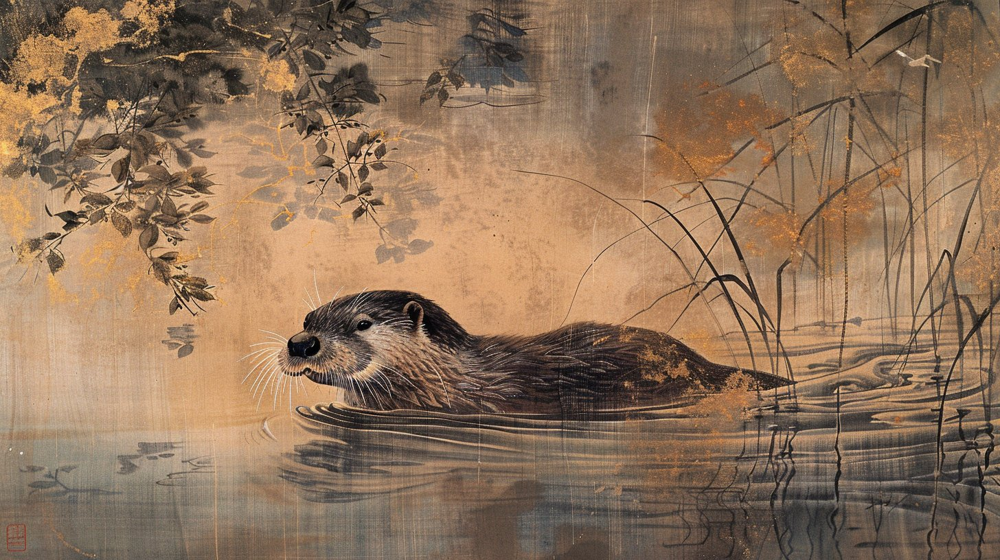
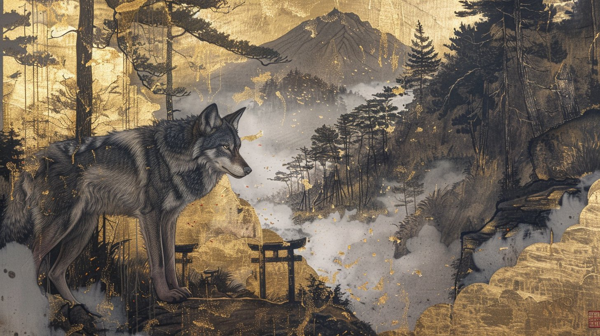

妖怪図鑑を作りながら、何体かの妖怪の正体とされる動物が、実際にはもう絶滅している、あるいは絶滅の危機にあることに気づいた。ここでは、その動物と妖怪の関係だけを整理する。史実（その動物が実際にいつ、どのように姿を消したか）と、妖怪としての振る舞い（どんな姿に化け、何を怖がられていたか）を、分けて書く。

史実（絶滅までの経緯）：ニホンカワウソは、かつて礫文島・北海道から本州・四国・九州、壱岐・対馬・五島列島まで、日本のほぼ全域に生息していた。明治期に狩猟が解放されると、上質な毛皮と薬用としての需要から乱獲が進み、大正期までに生息数が激減。1928年（昭和3年）には狩猟対象からも外された。1964年に天然記念物、翌1965年には特別天然記念物に指定されたが、戦後の1950年代には北海道・本州ではほぼ姿を消し、四国を中心にわずかに生き残るのみとなった。
1974年7月、高知県須崎市の新荘川で個体が確認され、魚を前足で持って食べる姿が撮影されると「奇跡が起きた」と全国的なニュースになった。しかし1979年、同じ新荘川で撮影された個体を最後に、目撃例は途絶える。この最後の個体は、川遊びをする子供と一緒に泳ぎ、泳いでいる最中に尾をつかまれても平然としているなど、野生動物としては異例に人慣れした様子が記録に残っている。それ以降、大規模な調査でも生息の証拠は見つからず、2012年8月8日、環境省はニホンカワウソを正式に絶滅種と発表した。目撃例の途絶えから絶滅発表まで、実に33年の時間があったことになる。
妖怪としての姿（何を怖がられていたか）：獺は、狐・狸と並ぶ「化け物」の代表格として、東北から九州まで全国各地に伝承が残る。よく化けるのは二十歳前後の娘や子供、あるいは僧で、縞模様の着物を着て現れることが多く、その縞はどんな暗闇でも鮮明に見えると言われた。正体を見破る方法として、「誰や」と問いかける話型が広く伝わる。人間なら「おらや」と答えるところ、獺は「あらや」と答えてしまい、この言葉のわずかな綻びから化け物だと気づかれる。
大坊主（大入道）に化けることもあるが、見上げるとその背丈がどんどん伸びていくため、対処法は「上を向かず、足元を見ること」だとされた。夜釣りの魚籠から魚を盗んだり、提灯の火を消したり、暗闇から人の名を呼んで振り返らせたりする悪戯も各地で語られている。幻術で人家がないはずの場所に人家を見せたり、逆に人家を見えなくしたりする話や、食べているつもりの馳走が実は馬の糞だった、という話も伝わる。和歌山県田辺市では、声色を使って通行人の名を呼ぶ獺（おそ）の話が残り、地域によっては河童と混同され、川で遊ぶ者から尻子玉を抜くとも言われた。「獺」の字自体、捕った魚を岸に並べる習性を先祖への祭祀に見立てた「獺祭魚」という故事に由来し、古くからこの獣が人智に近い知恵を持つと感じられていたことがうかがえる。
私の見方：獺の妖怪の記事を読むとき、これはもう「今もどこかにいるかもしれない動物」の話ではなく、「かつて確かにいた動物の記憶」の話になってしまっている。「あらや」と答えてしまう、というわずかな言葉のずれで正体が露見する話型は、化け物にしてはどこか愛嬌があって、憎めない存在として語られてきたんだと思う。妖怪の伝承が、絶滅した動物の生息の記録として、意図せず残ってしまっているという例だと思う。

ニホンオオカミ。" loading="lazy">史実（絶滅までの経緯）：ニホンオオカミは、明治の初めまで本州・四国・九州の山地にかなりの数が生息していたとされる。しかし明治に入ると、狂犬病の流入によって狼が凶暴化したと見なされたことや、西洋由来の「狼は邪悪な動物」という観念の輸入、各地での駆除政策が重なり、急速に数を減らした。日本で捕獲された最後の個体は、明治38年（1905年）、奈良県東吉野村鷲家口（わしかぐち）で捕らえられた若い雄。英国から派遣された東亜動物学探検隊員のアメリカ人・マルコム・アンダーソンが、地元の猟師から8円50銭で買い取り、標本は英国・大英博物館（現ロンドン自然史博物館）に渡った。1987年、この最後の捕獲地・鷲家口には、ニホンオオカミの等身大ブロンズ像が建立されている。
熊本県の洞穴からは、放射性炭素年代測定で室町時代から江戸時代初期のものと判明した全身骨格が発見されており、シーボルトが1826年に大阪で入手し持ち帰った剥製標本（オランダ国立自然史博物館所蔵）は、遺伝子解析の結果、母がニホンオオカミ・父が犬という交雑種だったことも分かっている。
妖怪としての姿（何を怖がられ、何を敬われていたか）：狼にまつわる伝承で特によく知られるのが「送り狼」。山道を歩く旅人の後を、一定の距離を保ってついてくるという話で、古くは人を襲う話はあまりなく、むしろ他の獣が近寄らないよう旅人を守る存在と見なされていた。危険が生じるのは、旅人が転んだ瞬間だとされ、そのため道中は決して弱みを見せず歩き続け、無事に家に着いたら振り返って一言お礼を言う、という作法が伝わる地域もある。山梨県には、送り狼を旅人を襲おうとしていたと誤解した村人が撃退・殺してしまったところ、以後は熊や猪に旅人が襲われるようになり、実はその狼が旅人を守っていたのだと気づいて祀り直した、という伝説も残る。人間の子供を狼が育てるという「子育て狼」の話も各地にある。
山言葉では狼を「やみ」と呼び変える忌み言葉があり、名を直接口にすることを避ける対象でもあった。一方で、狼を神格化した存在は「真神（まかみ）」と呼ばれ、埼玉県の三峯神社、静岡県の山住神社、東京都の武蔵御嶽神社など各地の神社で、農作物を守る守護神として祀られている。恐れの対象と、山の神の使いとして敬う対象という、両義的な姿が同じ獣の中に同居していたことになる。
私の見方：送り狼の伝承を読むと、恐怖の対象と守り神が、もともと同じ一つの獣の中に同居していたんだと思う。それが、明治期の狂犬病の流行や、西洋から入ってきた「悪い狼」という観念によって、後から片方の側面だけが強調され、今のような一方的に恐ろしいだけの狼のイメージに整理されていった、という経緯そのものが記録に値すると思う。神格化された真神を今も祀る神社が各地に残っているのに、その元になった動物自体はもういない、というのも、獺のケースとよく似ている。
この台帳では、妖怪の正体を「実在した動物」に短絡的に還元することはしないようにしている。ただ、獺のように、実在の動物の生態的な特徴（俊敏さ、薄暮性など）が化ける能力として物語化された、という学術的な解釈がすでにある場合には、それをそのまま紹介している。動物としての存在が消えても、妖怪としての名前は残り続ける、という事実だけは、この台帳の中でも記録しておきたいと思った。